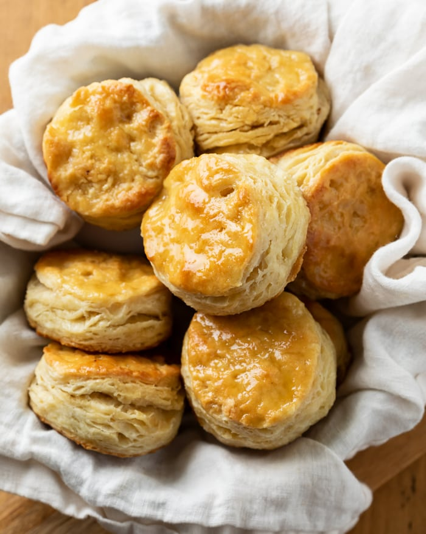

Buttermilk Biscuits

Flakey Buttermilk Biscuits
Enjoy this phenomenal passed down family recipe inspired by my great grandmother herself.
Ingredients
- ½ cup butter (1 stick), frozen
- 2 ½ cups self-rising flour
- 1 cup chilled buttermilk
- Parchment paper
- 2 tablespoons butter, melted
Time to Cook!
- First Preheat oven to 475°F. Grate frozen butter using large holes of a box grater. Toss together grated butter and flour in a medium bowl. Chill 10 minutes.
- Second Make a well in center of mixture. Add buttermilk, and stir 15 times. Dough will be sticky.
- Next Turn dough out onto a lightly floured surface. Lightly sprinkle flour over top of dough. Using a lightly floured rolling pin, roll dough into a ¾-inch-thick rectangle (about 9 x 5 inches). Fold dough in half so short ends meet. Repeat rolling and folding process 4 more times.
- Then Roll dough to ½-inch thickness. Cut with a 2 ½-inch floured round cutter, reshaping scraps and flouring as needed.
- Lastly Place dough rounds on a parchment paper-lined jelly-roll pan. Bake at 475°F for 15 minutes or until lightly browned. Brush with melted butter.